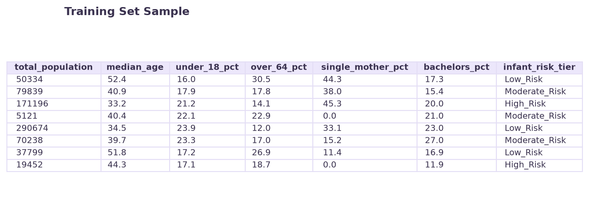
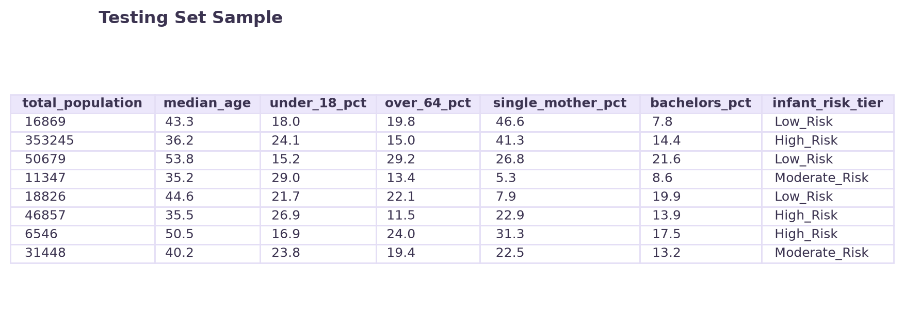
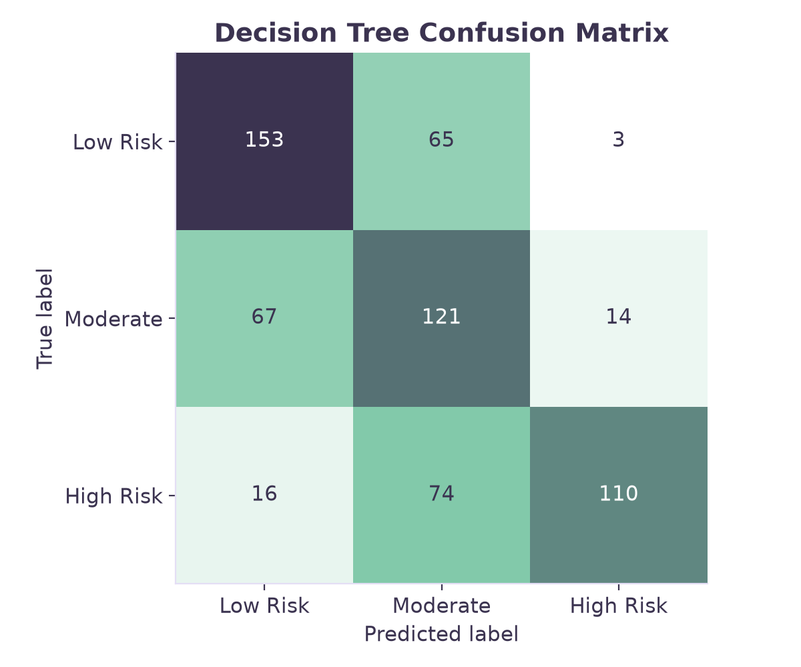
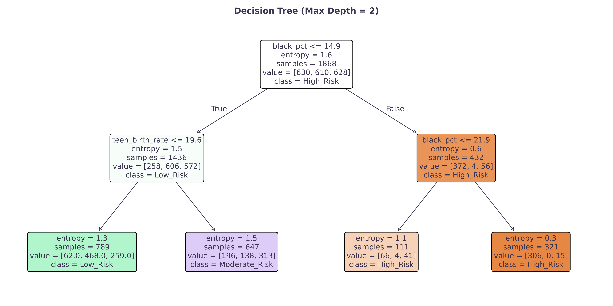
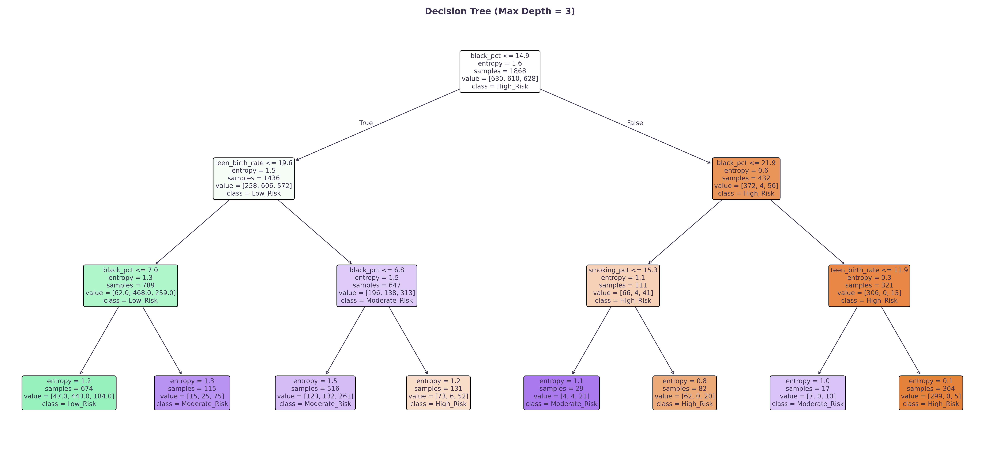
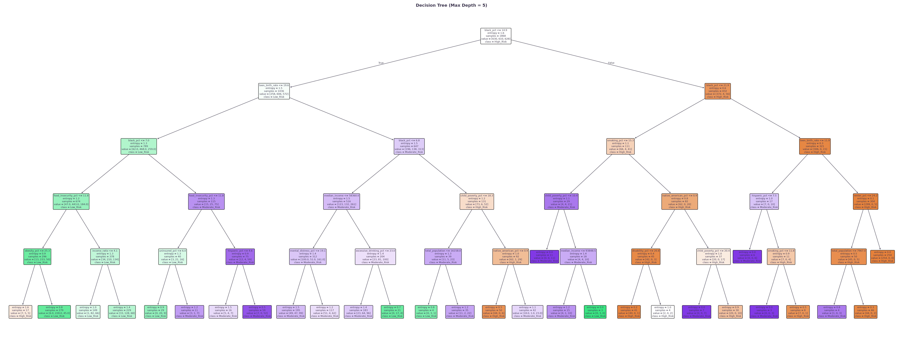

Overview
Decision Trees are a type of non-parametric supervised learning that builds a hierarchical series of recursive, axis-aligned splits. Every internal node asks a question and every leaf node provides a predicstion based on the majority class. In order to evaluate the "goodness" of a potential split, the algorithm calculates the reduction of impurity. This is done using Gini or Entropy. Entropy specifically measures the chaos within a node with the maximum entropy being a value of 1.0. 0 is the value of a perfecly pure node. Information Gain is the score used to pick the best split. This is calculated by taking the entropy of the parent node and subtracting the size-weighted average of the entropy of the resulting child nodes. The algorithm is greedy and selelcts the feature threshold that maximizes the Information Gain. A tree will continue to split until every leaf is perfectly pure, if given the opportunity, resulting in zero training error.
Data
Prepared dataset: clean_labeled_infant_risk.csv, clean_labeled_community_type.csv. Training set: dt_train.csv. Testing set: dt_test.csv. Raw data: raw_data folder.
Decision Trees use a labeled dataset partitioned into a completely disjoint training and test set to ensure a valid evaluation on unseen data. In this case a 75% training set and 25% test set were used. Decision Trees split data based on absolute numeric thresholds. They do not calculate geometric distances or probabilities therefore scaling or normalizing the features is not required. In conclusion, the raw, unstandardized percentafes and median ages were used to maximize the interpretability of the final model.

images/dt_data_split.png.

images/dt_train_sample.png.

images/dt_test_sample.png.Code
View the code here: decision_trees.py
This analysis was conducted in Python using the scikit-learn and matplotlib packages. The scikit-learn requires all features to be numeric.
Results
To stop the tree from memorizing the daata, its maximum depth was restricted to 2, 3, and 5. The tree with a depth of 5 had the best accuracy of 61.64%, beating the baseline of 35.47% and the Naïve Bayes model of 59.23%. The tree diagrams use specific colors to make the rules eaasy to follow with green representing Low Risk, purple representing Moderate risk, and orange representing High Risk. The root node shows the most powerful predictor. The color intensity and sample distribution numbers inside each box relfect the purity and majority class of that specific node. Across all the trees, the very first split happens when the Black population is 14.9%. Secondary splits, such as teen birth rates map out how structural disadvantages compound. The confusion matrix breaks down the testing counties across the three risk tiers. The diagonal cells show the successful predictions of 153 Low Risk counties, 121 Moderate Risk counties, and 110 High Risk counties were correctly classified.


images/dt_confusion_matrix.png.Generated Decision Trees


images/dt_tree_2.png.

images/dt_tree_3.png.

images/dt_tree_5.png.Conclusions
The largest benefit of Decision Trees for studying community health is the high level of interpretability. While Naïve Bayes had a solid baseline accuracy of 59.23% the Decision Tree with a depth of 5 reached a testing accuracy of 63.72%. Trees provide concrete, real-world numeric cutoffs showing direct comparisons. The Decision Tree proves that community distress does not operate under isolation, health risks are driven by specific non-linear interactions and compounding structural distadvantages. This can help lead clear change, based on the data.